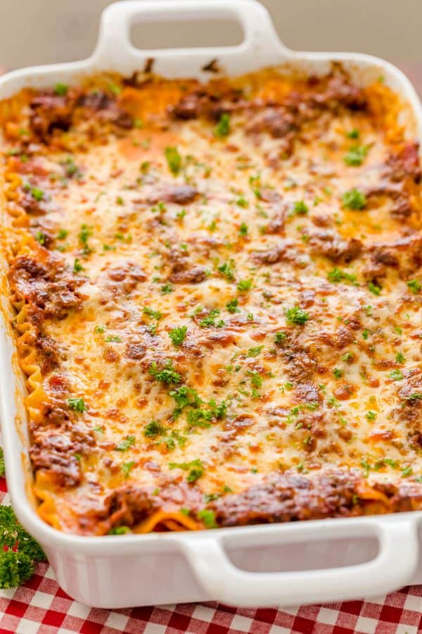

Lasagna

Look at how good!
80/20 beef, 9 lasagna noodle, mariana sauce and red wine
Takes less than 90 minutes to cook!
Only costs around $18-$22 to make as well!
About 368 calories per slice with about 12 slices
Ingreidents
- 1 lb ground beef, (15-20% fat content)
- 1 small onion, finely diced
- 2 large garlic cloves, minced
- 1/4 cup red wine, (any kind), or beef broth
- 1 Tbsp olive oil
- 24 oz Marinara Sauce , (3 cups)
- 1/2 tsp sea salt
- 1/4 tsp black pepper, ground
- 1/4 tsp dried thyme
- 1/2 tsp granulated sugar
- 2 Tbsp parsley, finely chopped
- 9 lasagna noodles, cooked al dente
Instructions
- Preheat oven to 375˚F. Bring a large pot of water to a boil. Add salt and 9 lasagna noodles. Cook until al dente according to package instructions.
- Spread 1/2 cup meat sauce in the bottom of a deep 9x13 casserole dish.
- Add 3 noodles, spread on 1/3 of the meat sauce and sprinkle with 1 cup mozarella cheese. Spoon on and spread the top with 1/2 of your cheese sauce.
- Repeat until you have 3 layers of noodles:
Add 3 noodles, 1/3 meat sauce, 1 cup mozarella cheese, 1/2 cheese sauce
Add 3 noodles, remaining 1/3 meat sauce, remaining 1 cup mozarella.
- Poke 9-12 toothpicks over the surface of your lasagna (to keep the foil from sticking to the cheese). Cover with foil and bake at 375˚F for 45 minutes.
- Remove foil and broil for 3 to 5 minutes, or until cheese turns golden. Let lasagna rest 30 min before slicing.
Return to Main Page